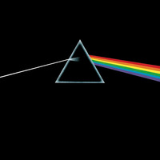

Music Albums List
My top 5 albums of each year, gathered from my last.fm profile, cmus and poweramp playing data.
For an all time albums list see [[albums]]
2023

- Dark Side of the Moon (Pink Floyd) - 1973
- J.S.Bach: Matthäus-Passion BWV 244 (Philippe Herreweghe) - 1999
- Let’s Dance (David Bowie) - 1983
- Soul Mining (The The) - 1983
- Treasure (Cocteau Twins) - 1984
2022

- Giuseppe Verdi: La Traviata (Bavarian State Orchestra - Carlos Kleiber) - 1977
- Wolfgang Amadeus Mozart: Don Giovanni (Wiener Philarmoniker - Riccardo Muti) - 1991
- Handel: Messiah (The English Concert Choir - Trevor Pinnock) - 1988
- J.S.Bach: Violin Concertos (Los Angeles Chamber Orchestra - Hilary Hahn) - 2003
- Beethoven: The 9 Symphonies (Berliner Philarmoniker - Herbert von Karajan) - 1963
2021
- Wolfgang Amadeus Mozart: Great Mass in C
Minor
(The Academy of Ancient Music - Christopher Hogwood) -1987 - Beethoven: The 9 Symphonies (Berliner Philarmoniker - Herbert von Karajan) - 1963
- Felix Mendelssohn: Symphony No. 4 in A Major & A Midsummer
Night’s Dream
(Cologne New Philharmonic Orchestra - Volker Hartung) - 2017 - Georges Bizet: Carmen (London Symphony Orchestra - Claudio Abbado) - 1978
- J.S.Bach: Brandenburg Concertos Nos.1 - 3 (Orchestra of the Age of Enlightenment) - 1954
2020
- Carol (Original Motion Picture Soundtrack) - 2015
- Hotspot (Pet Shop Boys) - 2020
- Golden Hour (Kacey Musgraves) - 2018
- Portrait In Jazz (Bill Evans Trio) - 1960
- Bocelli (Andrea Bocelli) - 1995
2019
- Seventeen seconds (The Cure) - 1980
- The Boy With The Arab Strap (Belle and Sebastian) - 1998
- Jeopardy (The Sound) - 1980
- Closer (Joy Division) - 1980
- Norman Fucking Rockwell! (Lana Del Rey) - 2019
2018
- Giant Steps (John Coltrane) - 1960
- Abbey Road (The Beatles) - 1969
- The Essential Elvis Presley (Elvis Presley) - 2007
- Country Life (Roxy Music) - 1974
- Little Girl Blue (Nina Simone) - 1959